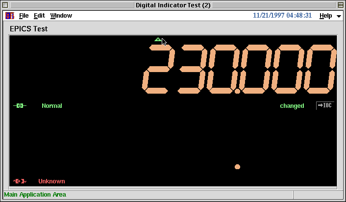

<!DOCTYPE HTML PUBLIC "-//W3C//DTD HTML 4.01 Transitional//EN">
<HTML lang="ja-JP">
<HEAD>
<META HTTP-EQUIV="Content-Type" CONTENT="text/html; charset=ISO-2022-JP">
<TITLE>KBFrame $BNc(B EPICS$BMQItIJ$r;H$&>l9g(B</TITLE>
</HEAD>

<BODY BGCOLOR="White" TEXT="Black" LINK="Blue" VLINK="Teal" ALINK="Red">

<A NAME="top" HREF="index-ja.html">$BL\<!(B</A>
<A HREF=smplepics-ja.html>$BNc(B EPICS CA $BMQ%k!<%A%s$r;H$&>l9g(B</A>

<HR><DIV ALIGN="CENTER"><H2>$BNc(B EPICS$BMQItIJ$r;H$&>l9g(B</H2></DIV><HR>

<P>EPICS$B%l%3!<%I$K%"%/%;%9$9$k;~$K!"(BCaOpen$B!"(BCaRead$BEy$N4X?t$rD>@\;H$o$:$K(B
KBDigitalIndicator[]$BEy$NItIJ$r;H$&>l9g!#0J2<$NNc$G$O!">e$N(B
KBDigitalIndicator[]$B$N(BEPICS Record$B$OB8:_$7$F!"2<$N(BKBDigitalIndicator[]
$B$N(BEPICS Record$B$OB8:_$7$J$$!#(B</P>

<PRE><CODE>
FFS;
w = KBMainFrame["DigitalIndicatorTest", f, Title-&gt;"Digital Indicator Test"];
cf = KBFComponentFrame[f,
  Add-&gt;{
    KBFGroup[Text-&gt;"EPICS Test"],
    KBFComponent[ComponentName:&gt;KBDigitalIndicator,
      ComponentOption-&gt;{EPICSRecName-&gt;"some_existent_record",Controller-&gt;True}],
    KBFFrame[WidgetVariable:&gt;f1]
  }
];
kdi1 = KBDigitalIndicator[f1,EPICSRecName-&gt;"non_existent_record"];
TkWait[];
</CODE></PRE>

<P></P>

<P><A HREF="#top">top</A></P>

<HR><ADDRESS>$B$3$N%Z!<%8$K4X$9$k8f0U8+!&<ALd$O(B
<A HREF="mailto:samo.stanic@kek.jp">Samo Stanic</A>
$B$^$G(B.</ADDRESS>
</BODY>
</HTML>
